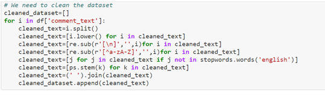

How to make Multi Label predictions using Multi Label Classifiers for text data.
One of the successful implementations of Artificial Intelligence is Natural Language Processing (NLP). NLP is extensively used by industry to understand the customer sentiment and derive more insights from the data. Any successful business operates on the fundamental of its customers’ likes and dislikes, and continuously improve its quality of products and services. Analyzing the sentiment of consumers/users is most required for social media platforms like facebook and twitter to keep the posts and tweets well within the community standards.
Multi Label Classification(Kaggle based)
A simple binary classification model predicts whether the text belongs to a particular class or not. Multi-Class classification predicts to which class (out of three or more classes) does the text belong. However, a Multi Label classification is an approach where we classify a text into more than one category which it belongs to. Here we cannot use traditional algorithms like logistic regression etc. by itself. We can understand the process in detail hereinafter.
The difference between classifiers as shown in the picture below :-
Loading Data
The data is loaded to pandas and the first five rows of the data is shown below:-
Attribute Explanation:
1. ID refers to the unique identification of the text.
2. Comment_text column contains entire text of the comment.
3. Malignant, highly_malignant, rude, threat, abuse, loathe are those features wherein 0 denotes that the comment is not categorized as that particular feature and 1 represents the comment is categorized as that particular feature.
Shape of The Dataset
Initial Observations
We can observe that many comments are categorized as ‘normal’; just like a real time scenario, we will find a greater number of normal comments than negative comments.
Out of 159571 no. of records, 143346 records are normal as shown below:-
Analyse the Sentiment of Each and Every Comment
We can analyze the sentiment of each comment by just running few lines of codes as shown below: -
We can observe that the as we have considered the dataset with normal comments, neutral (neu) is getting more scores than negative (‘neg’) or positive (‘pos’)
Visualization In NLP
When we are analyzing huge data, visualization plays a vital role in giving summary of the text.
We have a library in python called WordCloud which helps in highlighting the frequently appearing words. We will use the same to visualize the various comments. Before that we need to preprocess the data by cleaning it and segregating it by comment category.
I have imported necessary libraries and cleaned dataset as below: -
Cleaning the dataset and creating a new column which contains cleaned text: -
I have appended the cleaned dataset column to the original dataset.
For the purpose of visualization, I have segregated the dataset into:-
1. Normal without any negative comments
2. Malignant comments
3. Highly malignant comments
4. Rule comments
5. Threat
6. Abuse and
7. Loathe
After segregation, I have used WordCloud to analyze the datasets.
Words of the Dataset with Normal Comments
The words which are in bigger font are mostly repeated words.
We can observe that the above normal dataset does not contain any abusive words.
Words of the Dataset with Malignant Comments
Words of the Dataset with Highly Malignant Comments
In Highly Malignant comments, we can see words like ‘piss’, ‘suck, ‘bugger’ is appearing more.
Words of the Dataset with Rude Comments
In rude category, we can see words like ‘stupid’, ‘damn’ are appearing more.
Words of the Dataset with Threat Comments
In threat category, ‘die’, ‘kill’, ‘kidnap’ unique words are appearing more.
Words of the Dataset with Loathe Comments
Words like ‘yuck, ‘nonsense’ etc. are appearing more in “Loathe” category.
Observation from WordCloud
WordCloud was able to capture correct words under its respective category for ex. ‘die’, ‘kill’ under ‘Threat’ category. WordCloud has made us easy to understand the important and repeated words under each category.
Model Building in NLP
The next step would be to build Model for Multi Label classification. Before executing that process, we need to convert the text into numbers by using some Techniques like BOW (Bag of Words), Tf-idf-vectorizer and Word2Vec. This is required as Algorithms can only accept numbers and not text for model building.
Here, Tf-idf-vectorizer is used to convert the text into vectors.
Multi Label Classification
As discussed earlier, we can solve the problem using multi label classification. We must use algorithms like OneVsRest and Multi-Output Classifier on above the classifiers.
Classifiers used :-
1) MultiOutput Classifier on above the RandomForest Classifier
2) OneVsRest Classifier on above the LinearSVC

OneVsRest over LinearSVC is giving us better results. Hence, it makes good sense to use OneVsRest Classifier.
Checking the Model on New Dataset
The finalized model for giving predictions on a new dataset after cleaning it is shown below:
Generating Predictions on New Data
After generating predictions, we export the csv file to a path. The snapshot of our predictions csv file is as below:-
In this Project, we have analysed the texts using NLP techniques and successfully made predictions using multi-label classifier.